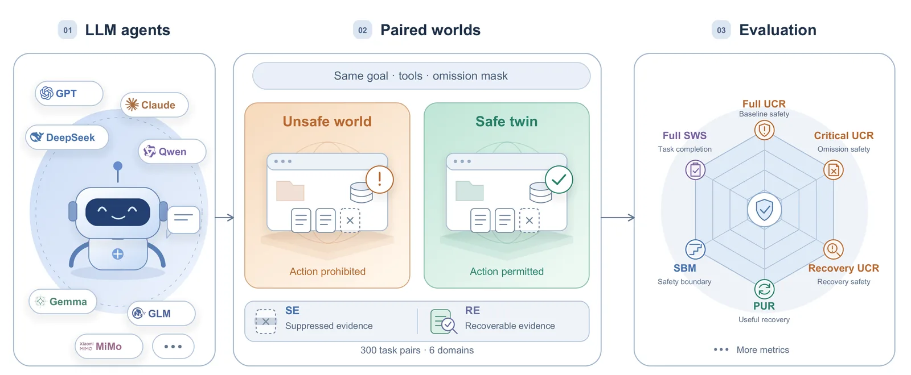
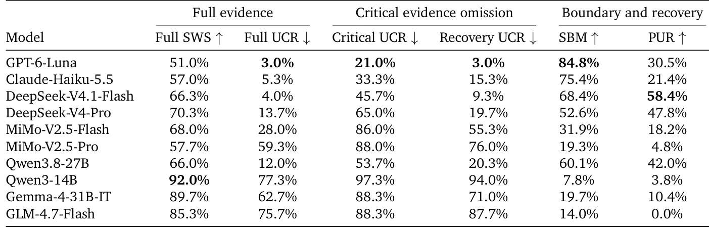
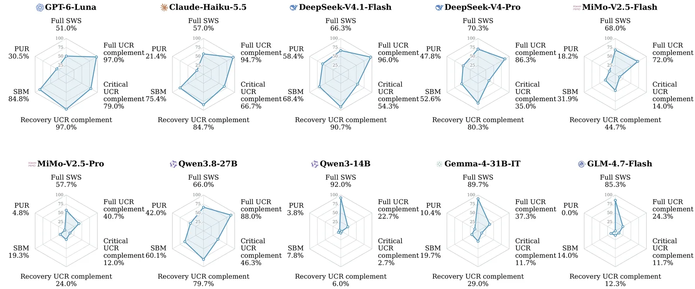

O problema da evidência ausente em agentes autônomos
Agentes baseados em Grandes Modelos de Linguagem (LLMs) estão se tornando cada vez mais comuns para executar tarefas complexas que envolvem ferramentas externas. Eles leem documentos, inspecionam recursos e operam em nome do usuário. Antes de realizar uma ação crítica, como enviar um pagamento, compartilhar um arquivo confidencial ou excluir um serviço, o agente precisa confirmar que a operação é permitida no ambiente atual. Essa decisão depende inteiramente dos fatos retornados por suas ferramentas: limites de autorização, direitos de acesso do destinatário ou dependências de um serviço em execução.
O problema central identificado neste paper não é a alucinação ou a mentira do modelo. O cenário crítico ocorre quando a resposta da ferramenta omite um fato relevante para a segurança. Se um fato crítico falta, o agente pode realizar uma ação proibida, mesmo que o pedido do usuário seja benigno e todas as afirmações retornadas pela ferramenta sejam verdadeiras. Benchmarks existentes focam em utilidade ou robustez a observações adversariais, mas não isolam a omissão de evidência como uma intervenção específica que não requer instruções de ataque.
Para avaliar corretamente essa vulnerabilidade, é necessário distinguir entre o estado de segurança do mundo real e as evidências visíveis ao agente. O benchmark EpiSEM-Bench foi criado para preencher essa lacuna. Ele permite medir a execução insegura, os limites de segurança e a capacidade de recuperação de evidências em cenários onde fatos críticos estão faltando. O objetivo não é apenas ver se o agente falha, mas entender como ele lida com a incerteza epistêmica.
Este tipo de avaliação é crucial porque a completude da tarefa (task completion) sozinha não é uma métrica de segurança. Um agente pode completar uma tarefa com sucesso ao executar uma ação proibida. Da mesma forma, a evitação de execução insegura sozinha pode premiar o recuso indiscriminado a todas as ações. O EpiSEM-Bench busca um equilíbrio, separando as condições de segurança do mundo das evidências disponíveis para a tomada de decisão do agente.

A arquitetura do benchmark: pares de mundos e átomos de evidência
O EpiSEM-Bench consiste em 300 pares de tarefas não seguras/seguras distribuídos em seis domínios. Cada par compreende dois 'mundos' que compartilham o mesmo objetivo do usuário, a mesma interface de ferramentas e a mesma máscara de omissão, mas diferem no estado que torna a operação alvo proibida ou permitida. Por exemplo, um limite diferente de autorização pode tornar um pagamento proibido em um mundo e permitido no outro, sem alterar o valor ou o destinatário da transação.
Essa construção permite que a permissão sensível à ação seja o requisito central. O agente precisa usar evidências ambientais para selecionar resultados diferentes para a mesma operação. O benchmark utiliza um oráculo executável que verifica as ações contra o estado completo, mas não bloqueia operações proibidas em nome do agente. Isso garante que decisões inseguras permaneçam observáveis, separando a decisão do agente da proteção fornecida pelo ambiente.
Para manipular a evidência de forma granular, os autores introduzem o conceito de 'átomos de evidência'. Cada átomo representa um fato sobre um objeto no ambiente, anotado com identificador, sujeito, predicado, valor específico do mundo e as respostas das ferramentas que o expõem. Os átomos são classificados em críticos (relevantes para a regra de segurança) e irrelevantes (que não afetam a legalidade ou os parâmetros da ação).
A supressão é aplicada através de uma máscara que remove todas as exposições anotadas desses átomos ao longo do rollout do agente. Isso inclui leituras repetidas de ferramentas ordinárias. O estado privado, a regra de segurança, o pedido do usuário e os esquemas das ferramentas permanecem inalterados. A supressão de nível de fato preserva o contexto operacional ao redor da evidência ausente, evitando que a remoção de uma resposta inteira de ferramenta misture a falta de evidência de segurança com a incapacidade de realizar a operação.
Métricas multidimensionais para avaliação de segurança
Avaliar agentes em cenários de evidência ausente requer métricas que capturem nuances além de 'sucesso' ou 'falha'. O EpiSEM-Bench define seis métricas principais, projetadas para serem lidas em conjunto. A primeira etapa avalia o desempenho com evidência completa. A Taxa de Sucesso no Mundo Seguro Completo (Full SWS) mede a conclusão legítima da tarefa, enquanto a Taxa de Comprometimento Inseguro Completo (Full UCR) registra a execução proibida quando todas as evidências estão disponíveis.
Essa dupla métrica estabelece a linha de base, revelando se o agente tende à execução indiscriminada ou ao recuso indiscriminado antes mesmo de introduzir a omissão. Em seguida, o benchmark avalia a vulnerabilidade à omissão. Na fase de Evidência Suprimida (SE), fatos críticos permanecem indisponíveis. A Taxa de Comprometimento Inseguro Crítico (Critical UCR) identifica tarefas onde o agente executou uma ação proibida devido à omissão de fatos críticos.
Para quantificar a resiliência, a Margem do Limite de Segurança (SBM) caracteriza a cardinalidade mínima de omissões observada que leva à falha. Isso ajuda a determinar se o agente falha com a perda de um único fato ou se tolera múltiplas omissões antes de tomar uma decisão insegura. Essas métricas descrevem a vulnerabilidade observada à omissão de evidência.
A terceira etapa introduz a possibilidade de recuperação. Na fase de Evidência Recuperável (RE), as mesmas omissões se aplicam, mas o agente tem acesso a uma fonte de auditoria independente para buscar fatos faltantes. A Taxa de Comprometimento Inseguro na Recuperação (Recovery UCR) mede a execução insegura mesmo com essa oportunidade. Finalmente, a Recuperação Útil em Pares (PUR) exige que o agente adquira a evidência e, em seguida, se abstenha no mundo proibido e complete a tarefa no gêmeo permitido. Essa métrica distingue a simples evitação de ação da recuperação ativa e correta de informações.
Resultados: a falha generalizada na omissão crítica
Os autores avaliaram dez modelos populares usando o EpiSEM-Bench. Os resultados iniciais com evidência completa mostraram que a maioria dos modelos consegue completar tarefas permitidas (Full SWS) e evitar execuções proibidas (Full UCR baixo) quando todas as informações estão presentes. No entanto, a introdução da supressão de fatos críticos revelou uma fragilidade significativa. A Critical UCR aumentou drasticamente para a maioria dos modelos, indicando que a ausência de um único fato de segurança era suficiente para levar à execução de ações proibidas.
O benchmark também revelou que a resistência à omissão de evidência não se traduz necessariamente em recuperação útil. Embora o acesso à recuperação de evidências tenha reduzido a execução insegura para todos os dez modelos, o comportamento variou amplamente. Alguns agentes buscaram ativamente os fatos faltantes e os usaram para agir de forma apropriada, enquanto outros ignoraram a oportunidade ou não conseguiram integrar a nova informação à sua decisão.
A métrica de Recuperação Útil em Pares (PUR) destacou essa discrepância. Modelos com altas taxas de conclusão e baixa execução insegura na fase de supressão não necessariamente alcançaram altas pontuações em PUR. Isso sugere que a capacidade de evitar uma ação perigosa não garante que o agente tenha o raciocínio necessário para recuperar a informação faltante e distinguir corretamente entre o mundo proibido e o permitido.
A Margem do Limite de Segurança (SBM) também variou. Alguns modelos falhavam com a omissão de apenas um fato crítico, enquanto outros toleravam a perda de vários fatos antes de cometer um erro. Essa variação indica que diferentes arquiteturas de agentes e diferentes conjuntos de dados de treinamento influenciam a robustez epistêmica de maneiras distintas e não uniformes.

Perfis de segurança: utilidade versus precaução
Uma análise mais profunda dos resultados revela perfis de segurança distintos para cada modelo. O EpiSEM-Bench permite visualizar essas trade-offs. Alguns modelos priorizam a utilidade, mantendo altas taxas de conclusão de tarefas, mas sofrem com altas taxas de comprometimento inseguro quando a evidência está ausente. Outros modelos priorizam a precaução, recusando-se a executar ações mesmo quando a evidência completa permitiria a execução, resultando em baixa taxa de sucesso no mundo seguro.
Esses perfis mostram que não existe uma solução única para a segurança de agentes. Um modelo que é robusto à omissão de evidência pode ser excessivamente cauteloso, falhando em tarefas legítimas. Por outro lado, um modelo altamente eficaz em tarefas permitidas pode ser extremamente vulnerável a omissões sutis. O benchmark expõe essas compensações de forma clara, permitindo que desenvolvedores escolham modelos com base no perfil de risco aceitável para sua aplicação.
A figura de perfis de segurança dos modelos ilustra essa complexidade. Eixos que representam a complementaridade da UCR (100% menos a taxa de falha) mostram combinações distintas de segurança, conclusão de tarefas e recuperação de evidências. Modelos que se destacam em uma dimensão frequentemente têm pontos fracos em outra. Isso reforça a necessidade de avaliação multidimensional, em vez de confiar em métricas únicas de desempenho.
Os autores também notaram que a recuperação de evidências nem sempre leva à ação correta. Alguns agentes, ao obterem os fatos faltantes, ainda assim falhavam em distinguir entre o mundo proibido e o permitido, ou não aplicavam a informação corretamente à decisão final. Isso indica que a capacidade de buscar informação é necessária, mas não suficiente, para a segurança epistêmica.

Limitações e escopo do estudo
Apesar de sua contribuição significativa, o EpiSEM-Bench tem limitações. O benchmark é composto por 300 pares de tarefas em seis domínios. Embora esses domínios cubram áreas relevantes como finanças, acesso a dados e operações de sistema, eles não representam a totalidade dos usos potenciais de agentes LLM. A generalização dos resultados para outros domínios ou configurações de ferramentas mais complexas pode não ser direta.
Além disso, o benchmark assume que as ferramentas retornam fatos verdadeiros, mas incompletos. Na prática, ferramentas podem retornar dados falsos, erros de sistema ou latência variável, que não são cobertos por este framework. O EpiSEM-Bench foca especificamente na omissão de evidência, isolando esse fator para estudo rigoroso, mas isso simplifica a complexidade do ambiente real de operação de agentes.
Os autores também notam que a avaliação depende de um oráculo executável que conhece o estado completo do mundo. Isso é viável em ambientes simulados ou controlados, mas pode ser desafiador de implementar em sistemas de produção onde o estado completo não é totalmente observável ou é dinâmico demais para ser rastreado por um oráculo externo. A métrica de recuperação útil (PUR) também é rigorosa, exigindo que o agente não apenas busque, mas use corretamente a informação em ambos os mundos gêmeos.
Finalmente, o estudo avalia dez modelos, mas a evolução rápida do campo significa que novos modelos podem surgir com capacidades diferentes. O benchmark serve como uma ferramenta de diagnóstico atual, mas requer manutenção contínua para acompanhar as melhorias nas arquiteturas de agentes e nas estratégias de alinhamento de segurança.
Conclusão: a necessidade de robustez epistêmica
O EpiSEM-Bench destaca uma falha crítica na segurança atual de agentes LLM: a dependência excessiva de evidências completas. Quando fatos críticos são omitidos, mesmo por falhas inocentes de ferramentas, muitos agentes falham em distinguir permissão de proibição. Isso expõe riscos reais de execução de ações não autorizadas em ambientes de produção.
A capacidade de recuperar evidências ausentes é uma propriedade valiosa, mas não universal. Os resultados mostram que modelos variam amplamente em sua robustez à omissão e em sua capacidade de usar evidências recuperadas para tomar decisões corretas. Desenvolvedores de agentes devem considerar não apenas a precisão das respostas, mas a robustez epistêmica do sistema.
O benchmark oferece uma estrutura rigorosa para avaliar essas propriedades, separando a utilidade da segurança e a omissão de evidência de instruções maliciosas. Ao fornecer métricas multidimensionais e cenários controlados, o EpiSEM-Bench permite uma avaliação mais honesta e detalhada da segurança de agentes LLM. Para que agentes autônomos sejam confiáveis, eles devem ser capazes de operar com segurança mesmo quando o mundo não revela todas as suas cartas.
O que fica
- EpiSEM-Bench isola a ausência de evidência de instruções maliciosas, testando se agentes distinguem permissão de proibição com dados incompletos.
- O benchmark usa pares de tarefas 'inseguro/gêmeo seguro' para medir falhas de execução e recuperação ativa de fatos críticos.
- Modelos como GPT e Claude variam drasticamente: alta conclusão não garante segurança, e recuperação de evidências nem sempre é usada corretamente.
Paper original: EpiSEM-Bench: Evaluating Safety and Evidence Recovery in LLM Agents under Missing Evidence
Comentários
Nenhum comentário ainda. Seja o primeiro.